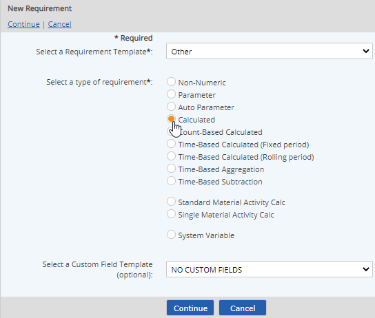
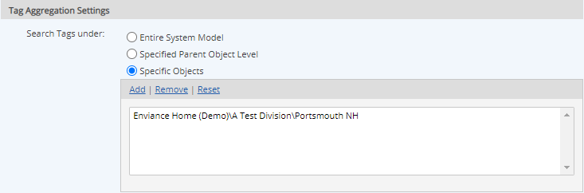
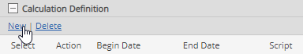
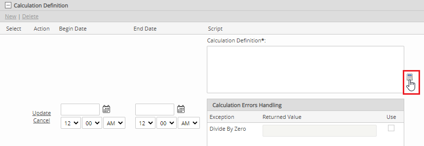
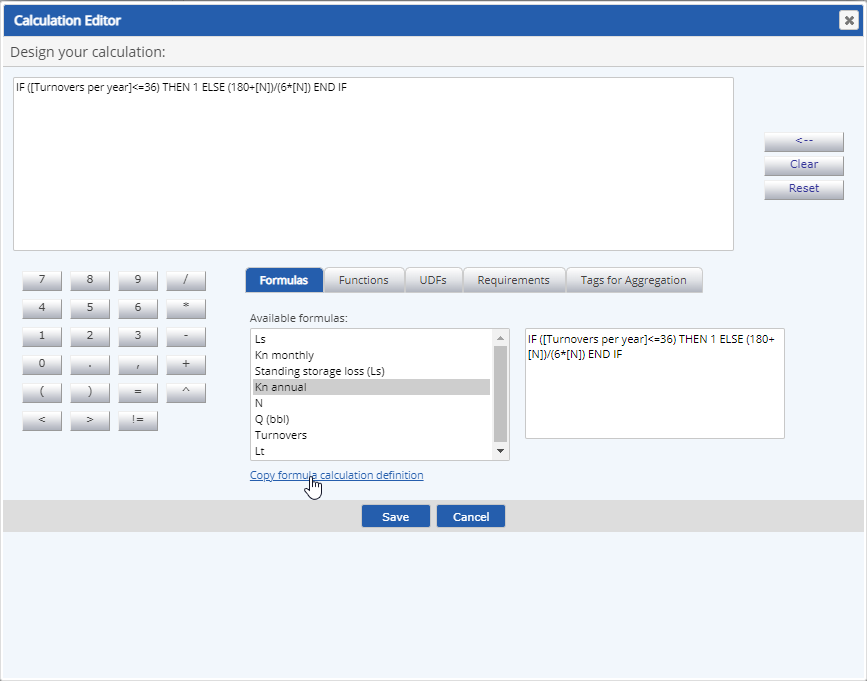
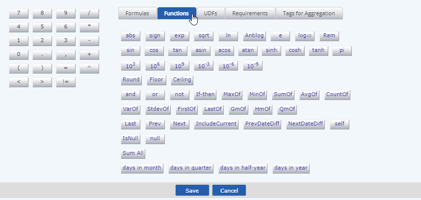
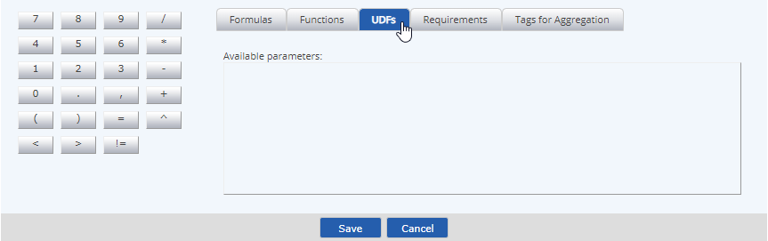
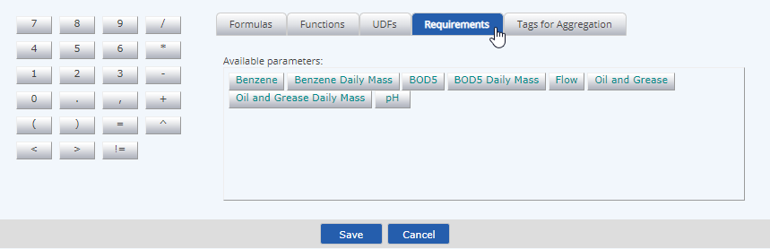
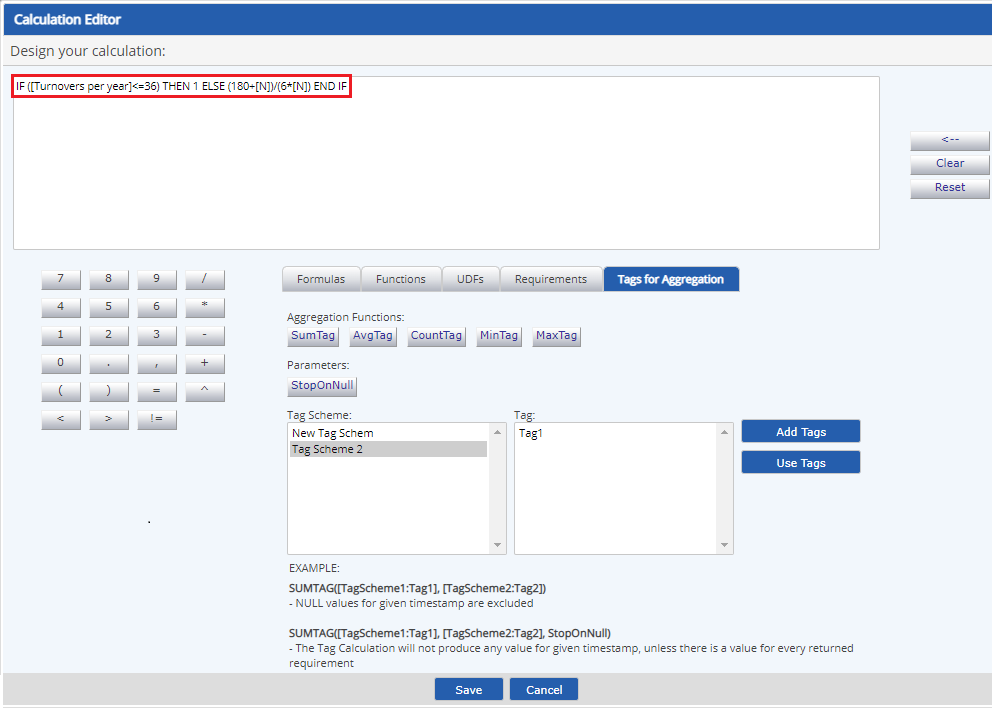
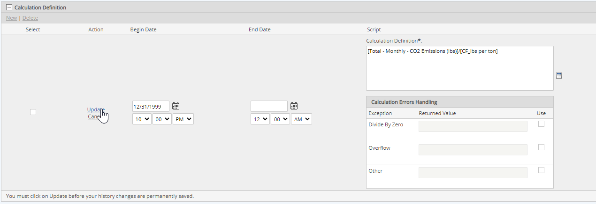

You can add translated values for localization by clicking on the language symbol
See Field Definitions for Calculated Requirements.
- Active Date/Inactive Date: The begin and end dates that a requirement applies (optional)
- Description: General description of a requirement
- UOM: Unit of measure
- Precision: Number of places to the right of the decimal point to display
- Calculation purpose: Describe what you want to accomplish in the calculation.
- Review the factors available to be used in the calculation, shown in the Calculation Requirements and Calculation UDF Parameters boxes. If necessary, you can add requirements from other locations to make them available to the calculation. All of the Calculation Requirements and Calculation UDF Parameters shown will appear as buttons in the calculator window to use in building the calculation.
- Calculation Requirements: Requirements under the same parent object are listed and will be available in the calculator automatically. To add additional requirements elsewhere in the system model, click Add and browse or search to find and select the requirements. To remove unnecessary requirements, click Remove. See Field Definitions for Calculated Requirements.
- Calculation UDF Parameters: Shows additional calculation parameters available to be used in the calculation, which are derived from a Calculation Template applied to the parent object. See Calculation Template.
- Entire System Model: Search tags in the whole system. Avoid using this option unless necessary.
- Specified Parent Object Level: Tags associated with a tree object in the requirement's direct hierarchy path are searched. You must choose the object type. Options available are limited to the direct ascendants of the requirement. For example, if the requirement is a child of a Facility, then only the parent Facility and grandparent Division are available; if it is the child of a POI, then POI, Unit, Facility, and Division are available. The object will remain relative to the requirement if it is copied or moved.
- Specific Objects: Search tags associated with one or more specific objects. If you select this option, a box appears in which you can then select the objects (requirements or tree objects).



The Calculator has tabs for the various components you can use in a formula.
- Formulas: This tab contains pre-defined formulas from a library which may be copied and edited. Select an available formula to see it. Click Copy formula calculation definition to add the formula to the formula window. You can then edit it and replace the components of the calc as needed.

- Functions: This tab contains the functions that can be used in the formula. It can be used as a calculator to add a function in the correct format.

- UDFs (User-Defined Fields): Numeric custom fields on the Calculation Template applied to the direct parent object.

- Requirements: Standard numeric and calculated requirements referenced by path.

- Tags for Aggregations: Standard numeric and calculated requirements can be referenced via tags. This type of calculation allows aggregations of requirements that meet criteria based on applicable tags. To create the formula:
- Click Add to add one or more tag schemes.
- Select a tag in the tag scheme.
- Click Use Tags to add the tag to the formula.
Example: In the formula below, SumTag([tag scheme example:tag1], [tag scheme with history:tag2]), only requirements that have both tags 1 and tags 2 will be included in calculations. Requirements that have only tags 1 or only tags 2 will not be included in the Tag Aggregation Calculation. For information on aggregation functions and parameters, see Mathematical Functions and Notations.
The calculation is displayed in the Calculation Definition box on the requirement properties form. An error message will be displayed if the calculation is invalid, and you will need to correct the formula before saving. You can type directly in the box or bring up the calculator again.

The calculation value can only be used in other calculations from the Begin Date.
- Calculation Errors Handling: Can be used to define a value to be returned if the calculation produces an error. To use error handling, check the Use box and enter a value to be used in the case of the error type.
- Expected Frequency: Can be used to produce a data warning if expected data is missing (often used in conjunction with a backend integration system, to warn of possible failures). The expected frequency is defined as the number of data points expected per day. A Begin Date must be set.
- Limits: Regulatory and internal limits may be set in order to produce a data warning when limits are exceeded. See Setting Regulatory Limits.
- Data Warning Notifications: Use to specify additional users or groups who should receive notifications if the regulatory or internal limits are exceeded. For more information, see Data Warning Notifications for Limits.
- Relations: If desired, you can associate Documents, Citations, and Tags with requirements. For more information, see: Associating Documents, Citation Associations and Tag Schemes and Tags.
- Test Usage Tags in Calcs: Use Test Usage Tags in Calcs to test how Requirements with specific tags are resolved in Tag Aggregation Calculations.